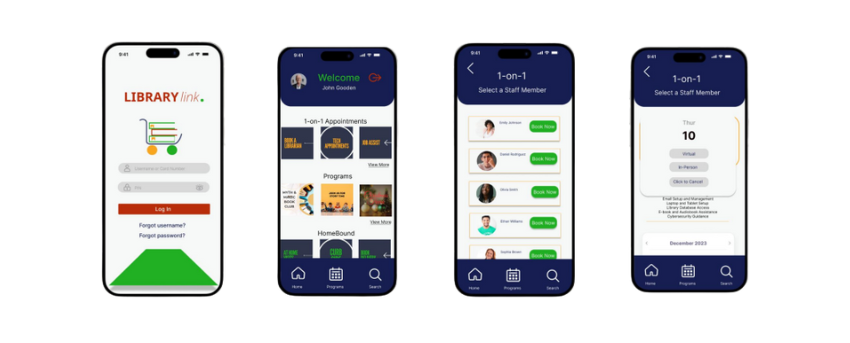
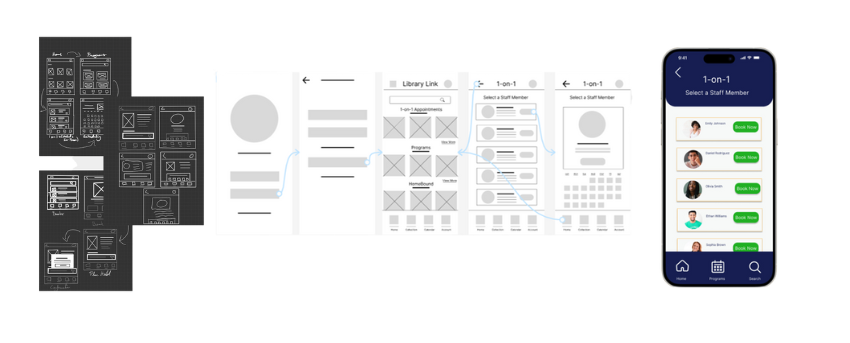
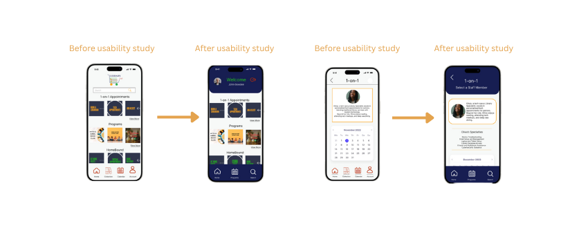

Library Link: A UX Case Study
Designer & Researcher: Kenyatta Ladd
Overview
Project Duration: October 2023 – December 2023
The Product: Library Link is a mobile app designed to improve the public library experience by enabling users to access library collections, book services, manage their accounts, and view upcoming programs—all in one place.
The Problem: Patrons need a quick, accessible way to manage and access their library services.
The Goal: Empower patrons with a seamless, inclusive, and digital connection to library resources and services.
My Role: UX Designer & Researcher
Responsibilities: User Research, Ideation, Wireframing, Prototyping
User Research & Insights
Methods: Conversations with public library users
Pain Points Identified:
- Lack of mobile access to library services
- Difficulty booking reference appointments
- Lack of awareness about library events
- Poor account management features on current platforms
Persona Highlight:
John: Limited tech experience and needs reliable, clear support for accessing services
Design Process
Wireframes
Initial paper wireframes explored different layouts for staff profile
pages and booking options. Digital wireframes emphasized simplified
booking navigation and staff profiles with key details.

Low-Fidelity Prototype
Created to test overall user flow. Issues identified included redundant icons and lack of virtual feature visibility.
Usability Testing
- Round 1: Self-testing revealed the need to highlight virtual features and fix icon misdirections.
- Round 2: Peer feedback indicated the need for a login screen and more complete user flows.
High-Fidelity Design
Accessibility Considerations:
- Alt text for all app images
- Maintaining strong color contrast and font size consistency
- Adjustments for readability in profile subpages
Takeaways
Impact: Users found the app highly interactive without being overwhelming. One peer reviewer praised the navigation, layout, and complete user flows.
What I Learned: Effective UX requires iterative design and detailed attention, especially when developing complex flows like staff booking systems.
Next Steps
- Refine Home Bound service pages
- Conduct another round of peer feedback
- Expand digital and remote service offerings